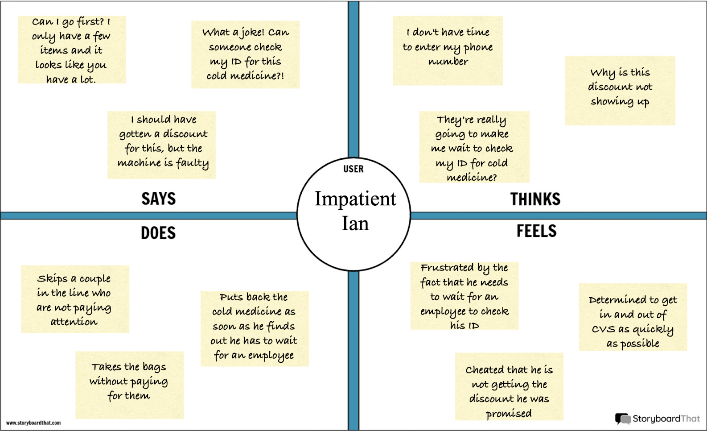
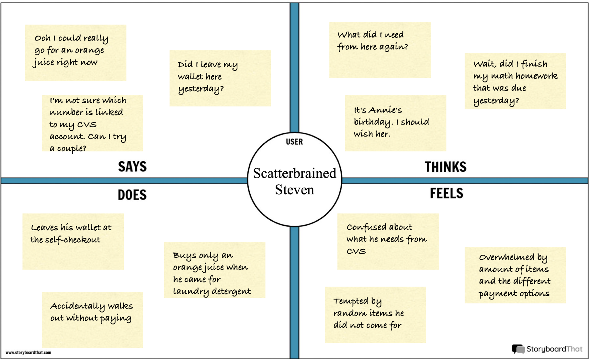

Above, we have the self-checkout system at the CVS on Thayer Street. There are three main components which I have numbered. The first one is the bag holder where customers place their scanned items and can bag their groceries. The second is the touchscreen that guides the customer through the checkout process. I have expanded this component into multiple screens as this is the centerpiece of the interface. Lastly, we have the payment pin pad and screen which are used to pay for the groceries. These three components work in conjunction to form the self-checkout system.
User 1
• Had 3 items (soap, toothpaste, Arizona can)
• Was very quick, in and out of self-checkout within a minute
• Did not use a bag
• Did not enter CVS card phone number
User 2
• Had about 10 items, small for the most part
• Took about 3-5 minutes to checkout
• Had a reusable bag brought from home
• Entered CVS card phone number
• Struggled at beginning when they placed scanned item in reusable bag on the floor and interface was expecting item to be placed in bagging area. Employee had to come over and tell them to put item in bagging area in order to continue scanning.
• Also was inconvenienced because had to wait for employee again after scanning cold medicine (required ID check).
User 3
• User got a fruit smoothie, a redbull, and two candy boxes
• User was very quick, although appeared run into a hurdle just prior to paying
• Entered CVS card phone number at the very beginning, before scanning any items
• Did not use a bag
QUESTIONS FOR USERS
1) Did you find the process intuitive? Did you think there was an obvious flow to the interface?
Users generally felt that the process was intuitive; however, there were hiccups such as required placement of scanned items into bagging area and not receiving promised discount.
2) Do you always put in a CVS card phone number?
For the most part, users enter their CVS card phone numbers when using self-checkout; they definitely would if a discount is on the line. They mentioned that it is sometimes easy to forget to enter their phone number, as they are never specifically prompted about it but must take the initiative to tap the enter phone number button.
3) Do you generally get your receipt? If so, in what fashion (print or email)?
Users were split on this question, with some preferring a paper receipt and some preferring no receipt; all users thought this part of the interface was easily accessible.
4) Do you always use the self-checkout rather than the in-person checkout? If so, is it because the interface is easy to use?
Most people tend to end up going through self-checkout, but if there is a line at self-checkout they would turn to in-person checkout.
5) Do you generally pay with credit card or do you use Apple Pay when going through self checkout?
Users reported using both Apple Pay and physical credit cards when paying at CVS. They appreciate the flexibility and do not mind that they are unable to pay with cash.
Impatient Ian

Impatient Ian is a stressed, single investment banker in his late twenties. Every minute he spends away from the office is money off his paycheck. Ian faces problems that stem from this impatience such as tapping through screens too quickly and making a mistake or forgetting to input his CVS phone number to apply discounts. He also may have a more limited selection given some items require an ID proving sufficient age, which in turn, requires an employee check; this would mean Ian would have to wait which he would likely find frustrating. Here, Ian represents the user who had to have their ID checked while purchasing cold medicine and was forced to wait for an employee before completing the transaction. Furthermore, Ian represents the user who had issues applying the discount to the items that were supposed to be discounted as well as the user who always skips the inputting of their CVS card phone number.
Scatterbrained Steven

Scatterbrained Steven is a college student with too many things on his plate and a weak organizational skillset; this results in him living in his thoughts and always appearing slightly out of it in the present. Steven potentially runs into problems such as forgetting to input his CVS card phone number as well as forgetting what items he went to CVS for in the first place. Furthermore, he certainly has the potential to get confused by the scanning/payment component of the self-checkout interface. Steven represents the user who did not realize that they had to place scanned items in the bagging area prior to scanning additional items (required an employee to explain this). Steven also represents the user who's discount was not applied; in Steven's case, this would be because he forgot to input his CVS card phone number.

Impatient Ian enters CVS at a hurried pace, anticipating an in-and-out experience.

With a list of his needs, Ian efficiently gathers items.

What's this?! A CVS customer rewards discount catches Ian's eye. How can he turn down the savings?

Impatient Ian finds himself waiting in line. He begins to get disgruntled. He will have to make up for this lost time somehow...

Finally, it's Ian's turn to begin self-checkout. He begins to scan items at an alarming rate.

Oh no, where is the discount Ian was promised?? There is no way he is paying full price!

Ian realizes he was in such a rush that he forgot to enter his CVS rewards card phone number. What a joke!

Ian restarts the scanning process while looking at his watch, devastated by the loss of time, but he is not leaving without that discount.

Ian, after being prompted by the main screen, finally pays by tapping his credit card on the card reader.

Impatient Ian finally gathers his items and exits CVS fuming at the lack of efficiency with which his grocery shopping was conducted.